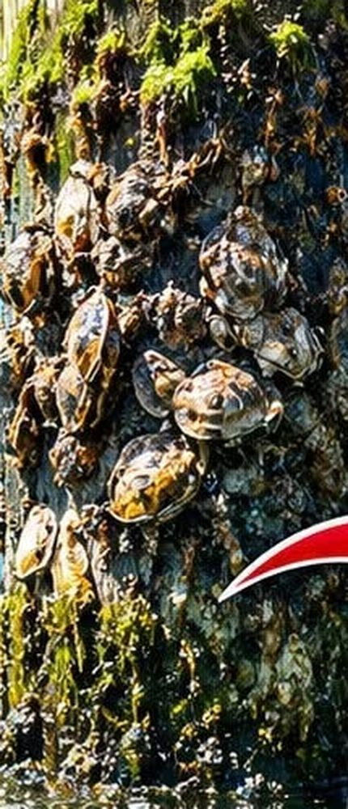
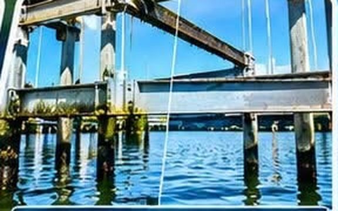

Tampa Bay Marine Cleaning and Maintenance
Dock, Seawall and Piling Cleaning in Pinellas, Hillsborough and Manatee Counties
Sea Dog Marine removes algae, barnacles, oysters, mold and marine growth from docks, seawalls, pilings, ladders and boat lifts. We restore your waterfront and protect it so it lasts.
- Free video inspections
- Before and after photos
- Maintenance plans


What does Sea Dog Marine do?
Sea Dog Marine is a marine cleaning and maintenance company serving waterfront property owners in Pinellas, Hillsborough and Manatee counties, Florida. Services include dock cleaning, seawall cleaning, dock piling cleaning and barnacle removal, boat lift cleaning, dock ladder degrowth, piling and dock protection wraps, storm prep and seasonal cleaning, recurring maintenance plans, and dive services including in-water hull and boat bottom cleaning, zinc anode replacement and propeller cleaning. Customers can get a free video inspection by calling or texting 727-699-4920.
Our Services

Dock Cleaning
We remove algae, mold, barnacles and marine growth from decking and framing
Learn more
Seawall Cleaning
We remove barnacles, oysters and algae from seawall faces and caps so you can see cracks before they spread.
Learn morePiling Cleaning
Sea Dog Marine removes oysters, barnacles and algae from wood and concrete pilings
Learn more
Boat Lift Cleaning
We remove barnacles and growth from cradles, bunks, beams and cables so your lift runs smoothly.
Learn more
Dock Ladder Cleaning
We remove barnacles, oysters and slime from swim and dock ladders so they are safe to use again.
Learn morePiling and Dock Protection Wraps
Protect wood pilings from marine borers, rot and growth
Learn moreMaintenance Plans and Storm Prep
Scheduled dock, seawall, piling and lift cleaning with storm prep and a photo report after every visit.
Learn moreDive Services
A diver comes to your dock, lift or slip and works on your boat in the water. See all dive services.
Hull and Boat Bottom Cleaning
A diver cleans barnacles, slime and growth off your hull and running gear at your dock or slip.
Learn moreZinc Anode Replacement
A diver replaces worn zinc anodes on shafts, props and trim tabs without a haul out.
Learn morePropeller Cleaning
A diver removes barnacles and growth from props, shafts and struts so the boat runs smooth.
Learn moreHow It Works
- Send a video. Text a short video or photos of your dock, seawall or lift to 727-699-4920.
- Get a price. We review it and send a clear recommendation and quote, usually the same day.
- We clean and restore. Our crew removes growth and documents the work with before and after photos.
- We protect it. Add piling wraps or a maintenance plan to keep growth from coming back.
Service Areas
Frequently Asked Questions
What areas does Sea Dog Marine serve?
Sea Dog Marine serves waterfront homes and businesses in Pinellas, Hillsborough and Manatee counties, including St. Petersburg, Clearwater, Tampa, Apollo Beach, Bradenton and Anna Maria Island.
What marine growth do you remove?
We remove algae, barnacles, oysters, mold, slime and other marine growth from docks, seawalls, pilings, ladders and boat lifts.
How does the free video inspection work?
Text a short video or photos of your dock, seawall or lift to 727-699-4920. We review it and send back a recommendation and price, often the same day, with no site visit needed to get started.
How much does dock or seawall cleaning cost?
Price depends on size, amount of growth and access. Send a free video inspection by text to 727-699-4920 for a fast, accurate quote.
Do you offer recurring maintenance?
Yes. We offer maintenance plans with scheduled cleanings, storm prep and photo reports for homeowners, HOAs, rentals and marinas.
Free Video Inspection
Text a short video or a few photos of your dock, seawall, pilings or lift. We send back a recommendation and price, usually the same day.